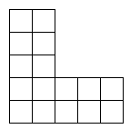
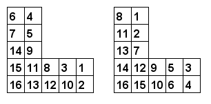

For integers $m, n$ ($0 \leq n \lt m$), let $L(m, n)$ be an $m \times m$ grid with the top-right $n \times n$ grid removed.
For example, $L(5, 3)$ looks like this:

We want to number each cell of $L(m, n)$ with consecutive integers $1, 2, 3, \dots$ such that the number in every cell is smaller than the number below it and to the left of it.
For example, here are two valid numberings of $L(5, 3)$:

Let $\operatorname{LC}(m, n)$ be the number of valid numberings of $L(m, n)$.
It can be verified that $\operatorname{LC}(3, 0) = 42$, $\operatorname{LC}(5, 3) = 250250$, $\operatorname{LC}(6, 3) = 406029023400$ and $\operatorname{LC}(10, 5) \bmod 76543217 = 61251715$.
Find $\operatorname{LC}(10000, 5000) \bmod 76543217$.
solve(m=5, n=3) → ?solve(m=10000, n=5000) → ?